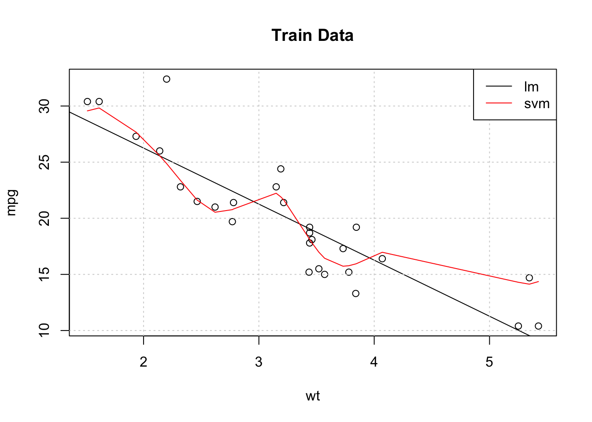
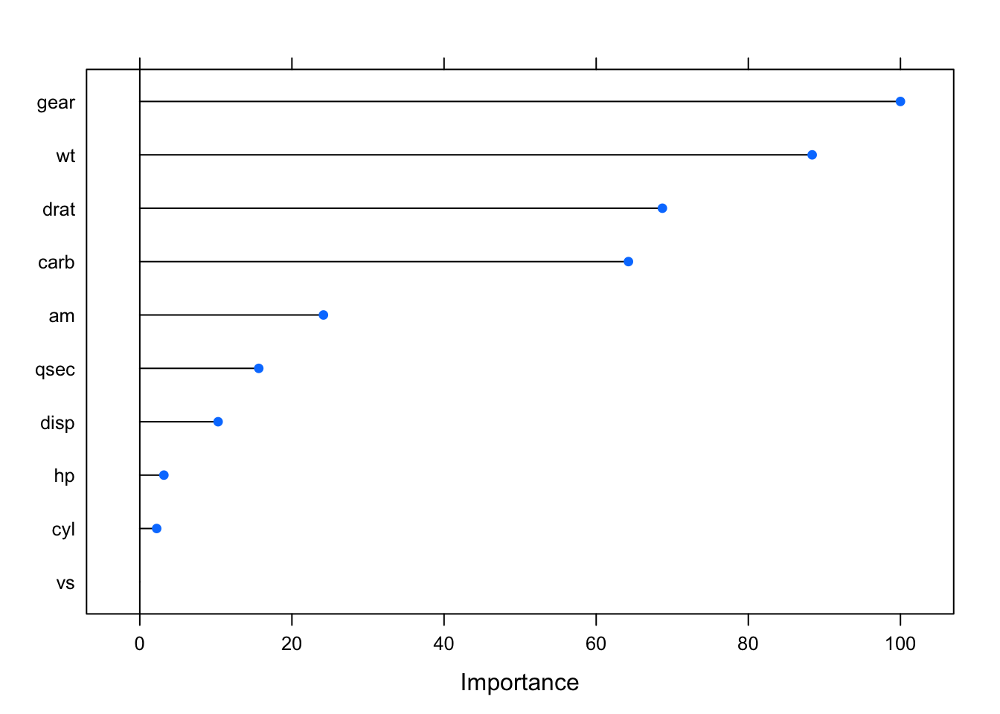
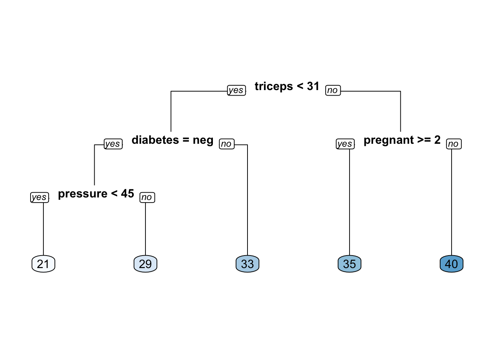

Chapter 10 Picking The Best Model
It’s always of interest to compare the results of one model to another (or even more) to determine the “best” model to share with some else. On the other hand, it’s easy to get carried away with trying out different models in an attempt to make performance improvements especially when the might only be marginally better. It’s also wise to pick methods that you know how to reasonably defend over those that you can’t. For example, picking a Neural Net model might result in better accuracy although if you are challenged on the results in some way, would you be able to address all concerns ? If a logistic regression model resulted in a comparable result then you might should stick with that result since it’s a well-known method that few would question.
10.1 An Example
As an example, let’s go back to the linear modeling example back in the section wherein we introduced the caret package.
set.seed(123) # Make this example reproducible
idx <- createDataPartition(mtcars$mpg, p = .8,
list = FALSE,
times = 1)
head(idx)## Resample1
## [1,] 1
## [2,] 3
## [3,] 4
## [4,] 5
## [5,] 6
## [6,] 8example_Train <- mtcars[ idx,]
example_Test <- mtcars[-idx,]
#
control <- trainControl(method = "cv", # Cross Fold
number = 5, # 5 Folds
verboseIter = FALSE) # Verbose
# Train the model
#set.seed(123) # Make this example reproducible
my_lm <- train(
mpg ~ wt,
example_Train,
method = "lm",
preProc = c("center","scale"),
trControl = control
)
my_lm## Linear Regression
##
## 28 samples
## 1 predictor
##
## Pre-processing: centered (1), scaled (1)
## Resampling: Cross-Validated (5 fold)
## Summary of sample sizes: 23, 23, 23, 21, 22
## Resampling results:
##
## RMSE Rsquared MAE
## 2.681831 0.8226844 2.184225
##
## Tuning parameter 'intercept' was held constant at a value
## of TRUESo does this model perform better than a model built using a support vector machine ? It’s easy to generate such a model by reusing much of the same information from above.
This is arguably one of the best features of the caret package as it helps us execute any number of models and then assess their performance on new data. Let’s look at our models thus far. In fact, it’s so easy to generate them with caret, we’ll just make them here again. Let’s set a common trainControl list. We’ll use the Train and Test sets from above.
#set.seed(123) # Make this example reproducible
my_svm <- train(
mpg ~ wt,
example_Train,
method = "svmRadial",
preProc = c("center","scale"),
trControl = control
)
my_svm## Support Vector Machines with Radial Basis Function Kernel
##
## 28 samples
## 1 predictor
##
## Pre-processing: centered (1), scaled (1)
## Resampling: Cross-Validated (5 fold)
## Summary of sample sizes: 24, 22, 23, 21, 22
## Resampling results across tuning parameters:
##
## C RMSE Rsquared MAE
## 0.25 4.493392 0.6522108 3.306254
## 0.50 3.884312 0.7223885 2.862432
## 1.00 3.385047 0.7691903 2.689159
##
## Tuning parameter 'sigma' was held constant at a value
## of 23.06516
## RMSE was used to select the optimal model using the
## smallest value.
## The final values used for the model were sigma = 23.06516 and
## C = 1.So let’s plot the training data as well as the resulting regression line (in the color black) coming from the lm object. We’ll also plot the results from the Support Vector Machine predictions on the same graph (in red). From this plot it appears that the Support Vector Machine does a better job of “following” the actual data - at least for the training data. We might even be able to improve the SVM performance if we tune the hyperparameters but the default without tuning seems better than the lm. It’s this type of observation that leads one to consider if there are yet other methods that would result in even better results.
plot(mpg~wt,data=example_Train,main="Train Data")
abline(lm_fit$finalModel)
grid()
svm_preds <- predict(my_svm,example_Train)
pdf <- data.frame(cbind(Train$wt,svm_preds))
points(svm_preds~V1,data=pdf[order(pdf$V1),],col="red",pch=4,type="l")
legend("topright",c("lm","svm"),col=c("black","red"),lty=1,cex=1)
In terms of the RMSE for the Test set predictions, which method is better (i.e. the lowest RMSE) ?
lm_preds <- predict(my_lm,example_Train)
svm_preds <- predict(my_svm,example_Train)
#
cat("RMSE for lm is: ",Metrics::rmse(example_Test$mpg,lm_preds),"\n")## RMSE for lm is: 9.656877## RMSE for smv is: 9.26604810.2 More Comparisons
Let’s keep going. We’ll use some more methods to see how they perform on the same data. The cool think about caret is that we can reuse the same control object and seeds to facilitate reproducibility. We’ll pick two other methods in addition to the ones we have to see how we can compare them all. In reality, this would be just the beginning of the process, not the end since if we pick a method with hyperparameters then we would want to tune those.
control <- trainControl(method = "cv", # Cross Fold
number = 5, # 5 Folds
verboseIter = FALSE) # VerboseNote that we will be predicting the MPG value as a function of all variables in the data frame.
# Train the lm model
set.seed(123)
comp_mod_lm <- train(mpg ~ .,
example_Train,
method = "lm",
preProc = c("center","scale"),
trControl = control)
# Train the SVM Radial Model
set.seed(123)
comp_mod_svm <- train(mpg ~ .,
example_Train,
method = "svmRadial",
preProc = c("center","scale"),
trControl = control)
# Train the Lasso and Elastic-Net Regularized Generalized Linear Models
set.seed(123)
comp_mod_glmnet <- train(mpg ~ .,
example_Train,
method = "glmnet",
preProc = c("center","scale"),
trControl = control)
# Train the Random Forest Model
set.seed(123)
comp_mod_ranger <- train(mpg ~ .,
example_Train,
method = "ranger",
preProc = c("center","scale"),
trControl = control)10.3 Using the resamples() function
Now, here comes the “magic”. Because we built four different modeling objects on the same data set and seeds we can now use the resamples function to collect, analyze, and visualize a set of results. This is pretty powerful.
results <- resamples(list(LM = comp_mod_lm,
SVM = comp_mod_svm,
GLMNET = comp_mod_glmnet,
RANGER = comp_mod_ranger))
results##
## Call:
## resamples.default(x = list(LM = comp_mod_lm, SVM
## = comp_mod_svm, GLMNET = comp_mod_glmnet, RANGER
## = comp_mod_ranger))
##
## Models: LM, SVM, GLMNET, RANGER
## Number of resamples: 5
## Performance metrics: MAE, RMSE, Rsquared
## Time estimates for: everything, final model fit
10.4 Model Performance
Of course, we can now use the Test data frame to see how the RMSE looks on the holdout data frame.
## [1] 4.808981## [1] 3.65783## [1] 3.65783## [1] 2.288412Another way to look at these models is to use the diff function.
##
## Call:
## diff.resamples(x = results)
##
## Models: LM, SVM, GLMNET, RANGER
## Metrics: MAE, RMSE, Rsquared
## Number of differences: 6
## p-value adjustment: bonferroni##
## Call:
## summary.diff.resamples(object = difs)
##
## p-value adjustment: bonferroni
## Upper diagonal: estimates of the difference
## Lower diagonal: p-value for H0: difference = 0
##
## MAE
## LM SVM GLMNET RANGER
## LM -0.52020 0.40699 0.36900
## SVM 0.67373 0.92719 0.88921
## GLMNET 1.00000 0.14273 -0.03799
## RANGER 1.00000 0.04069 1.00000
##
## RMSE
## LM SVM GLMNET RANGER
## LM -0.51910 0.44889 0.44274
## SVM 0.78455 0.96799 0.96184
## GLMNET 0.58495 0.03576 -0.00615
## RANGER 0.95365 0.03587 1.00000
##
## Rsquared
## LM SVM GLMNET RANGER
## LM -0.02850 -0.13294 -0.15787
## SVM 1.0000 -0.10444 -0.12937
## GLMNET 0.6034 0.6498 -0.02493
## RANGER 0.4937 0.3675 0.5323
10.5 Feature Selection
Features are the columns in your data set. Up until now we have not been concerned with the formula being specified choosing rather to focus on how to run models with the caret package. However, knowing how to select the “best” subset of features is important since an overspcified formula might result in very long training times and, even then, it might not be that good of a model for predicting out of sample error. Of course, various methods have ways to deal with this problem.
For example, Stepwise regression is one way to look at combinations of predictor variables to arrive at the optimal feature set according to some score (e.g. AIC, BIC). This process is implemented recursively. However, none of this should be a substitute for solid intuition about the data or knowing how features vary with each other (if at all). Still, packages such as caret have ways to assist with feature selection. We’ll look at a few here:
10.5.1 Recursive Feature Elimination
The general idea with this approach is to build models using combinations of predictors to arrive at the best model according to some metric such as RMSE. Some predictors might be discarded along the way resulting in a “leaner” feature set that would then hopefully be easier to defend than a more complex or fully specified feature set. There is no free lunch here in that blindly accepting the features handed to you by a recursive or automatic method should not be considered authoritative especially if you have a reason to believe that some key feature has been excluded. Many people, however, like to use these methods as a starting point. You would still need to review the diagnostics associated with a final model to determine if it is statistically sound.
According to the caret documentation there are a large number of supported models that contain some form of embedded or built-in feature selection. Such functions are doing you a favor (or not) by showing you the importance of contributing features.
10.5.1.1 An Example
Let’s work with the lm function again to see if we can find some interesting features using some caret functions. The main function for Recursive Feature Elimination is rfe which, like the train function, accepts a control object to help guide the process. Here we are telling the rfe function to use some helper functions to assess predictors. We don’t need to pass it a model - it handles these things under the hood. In this case we’ll use 10 Fold Cross Validation.
set.seed(123)
control <- rfeControl(functions=lmFuncs, method="cv",number=10)
results <- rfe(mtcars[,2:11], # Predictor features
mtcars[,1], # Predicted features - mpg
sizes=c(1:5), # pick groups of predictors 1-5
rfeControl=control)
results##
## Recursive feature selection
##
## Outer resampling method: Cross-Validated (10 fold)
##
## Resampling performance over subset size:
##
## Variables RMSE Rsquared MAE RMSESD RsquaredSD MAESD
## 1 3.113 0.8486 2.762 1.878 0.2403 1.811
## 2 3.134 0.8392 2.798 1.650 0.2689 1.568
## 3 2.700 0.8872 2.421 1.366 0.1543 1.203
## 4 2.916 0.8655 2.512 1.444 0.1664 1.239
## 5 2.992 0.8884 2.633 1.438 0.1461 1.253
## 10 3.391 0.8864 3.055 1.447 0.1614 1.283
## Selected
##
##
## *
##
##
##
##
## The top 3 variables (out of 3):
## wt, am, drat
What we get back is some idea about the important features. We could then build a model with caret that uses only these features to see if the suggested RMSE value mentioned in the rfe process matches.
10.5.2 Redundant Feature Removal
The caret package has some functions that can help us identify highly correlated variables that might be a candidates for removal prior to use in building a model. Let’s go back to the mtcars data set as it exists by default. One of the variables that is highly correlated with others is mpg Since that is the one we are trying to predict, we’ll keep it around.
correlations <- cor(mtcars[,-1])
# Find all correlated variables above .75
(highcorr <- findCorrelation(correlations, cutoff=.75))## [1] 1 2 9## cyl disp gear
## Mazda RX4 6 160.0 4
## Mazda RX4 Wag 6 160.0 4
## Datsun 710 4 108.0 4
## Hornet 4 Drive 6 258.0 3
## Hornet Sportabout 8 360.0 3
## Valiant 6 225.0 3
## Duster 360 8 360.0 3
## Merc 240D 4 146.7 4
## Merc 230 4 140.8 4
## Merc 280 6 167.6 4
## Merc 280C 6 167.6 4
## Merc 450SE 8 275.8 3
## Merc 450SL 8 275.8 3
## Merc 450SLC 8 275.8 3
## Cadillac Fleetwood 8 472.0 3
## Lincoln Continental 8 460.0 3
## Chrysler Imperial 8 440.0 3
## Fiat 128 4 78.7 4
## Honda Civic 4 75.7 4
## Toyota Corolla 4 71.1 4
## Toyota Corona 4 120.1 3
## Dodge Challenger 8 318.0 3
## AMC Javelin 8 304.0 3
## Camaro Z28 8 350.0 3
## Pontiac Firebird 8 400.0 3
## Fiat X1-9 4 79.0 4
## Porsche 914-2 4 120.3 5
## Lotus Europa 4 95.1 5
## Ford Pantera L 8 351.0 5
## Ferrari Dino 6 145.0 5
## Maserati Bora 8 301.0 5
## Volvo 142E 4 121.0 4